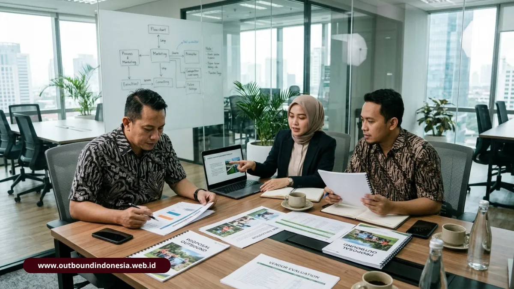

Standar fasilitator outbound BNSP AELI merujuk pada kompetensi kerja nasional yang diujikan dan disertifikasi untuk pemandu kegiatan experiential learning, mencakup perencanaan program, pemanduan, penilaian risiko, dan pertolongan pertama. HRD dapat menjadikannya acuan utama saat menyeleksi vendor. Informasi ini bersifat umum. Untuk kegiatan berisiko tinggi, konsultasikan dengan ahli keselamatan dan lembaga sertifikasi resmi.
Apa Landasan Regulasi Fasilitator Outbound di Indonesia?
Landasan regulasinya adalah Keputusan Menteri Tenaga Kerja dan Transmigrasi No. KEP 329/MEN/XII/2011, yang menetapkan SKKNI sektor pariwisata bidang kepemanduan outbound atau fasilitator experiential learning. Dokumen itu merumuskan kemampuan minimum yang harus dimiliki pemandu, sehingga kualitas layanan tidak bergantung pada pengalaman pribadi semata.
Apa Peran AELI dan BNSP?
AELI (Asosiasi Experiential Learning Indonesia) berperan sebagai asosiasi induk yang menaungi dan menyupervisi profesi. BNSP (Badan Nasional Sertifikasi Profesi) menerbitkan sertifikasi melalui lembaga sertifikasi profesi, dalam hal ini LSP Pramindo. Informasi umum lembaga dapat dilihat di situs resmi BNSP. Untuk memastikan keaslian sertifikat, minta nomor sertifikat dan verifikasi ke lembaga penerbit.
Apa Saja Sembilan Unit Kompetensi Fasilitator Experiential Learning?
Sembilan unit kompetensi inti mencakup perencanaan, pemanduan, pengelolaan sumber daya, kegiatan tali rendah dan tinggi, analisis risiko, serta pertolongan pertama. Fasilitator bersertifikat diharapkan menguasai seluruhnya:
- Merencanakan program kegiatan rekreasi.
- Merencanakan program kegiatan pembelajaran.
- Mengatur sumber daya program.
- Melaksanakan pemanduan kegiatan rekreasi.
- Melaksanakan pemanduan kegiatan pembelajaran.
- Memandu kegiatan tali rendah (low rope).
- Memandu kegiatan tali tinggi (high rope).
- Menganalisis risiko dalam kegiatan.
- Memberikan pertolongan pertama pada kecelakaan.
Perhatikan pasangan unit perencanaan dan pemanduan. Keduanya membedakan fasilitator pembelajaran dari sekadar pemandu permainan.
Apa Perbedaan Jenjang Muda, Madya, dan Utama?
Sertifikasi dibagi tiga jenjang: Fasilitator Muda, Madya, dan Utama. Semakin tinggi jenjang, semakin luas tanggung jawab dan kompleksitas program yang dapat ditangani. Untuk program berisiko lebih tinggi atau berskala besar, HRD sebaiknya menanyakan jenjang fasilitator yang ditugaskan.
Bagaimana Standar Keselamatan dan Mitigasi Risiko Kegiatan Outbound?
Standar keselamatan kegiatan outbound mencakup penilaian risiko tertulis, perlengkapan yang terawat, prosedur tanggap darurat, personel yang terlatih pertolongan pertama, dan asuransi kegiatan.
Apa yang Perlu Ada dalam SOP Peralatan?
Untuk aktivitas tali tinggi, vendor perlu memiliki prosedur pemeriksaan perlengkapan sebelum digunakan, catatan perawatan, serta batas beban dan jumlah peserta per wahana. Tanyakan juga siapa yang bertanggung jawab memeriksa dan menghentikan aktivitas bila kondisi tidak aman.
Apa yang Perlu Disiapkan untuk Keadaan Darurat?
Vendor yang baik mampu menunjukkan alur tanggap darurat: kontak medis terdekat, jalur evakuasi, perlengkapan P3K, dan pembagian tugas tim saat insiden. Mintalah dokumen risk assessment untuk setiap aktivitas, serta keterangan mengenai asuransi peserta. Dokumen ini tidak menggantikan penilaian ahli keselamatan. Pada kegiatan dengan wahana tinggi atau medan alam, libatkan profesional K3 dalam peninjauan.
Bagaimana Kerangka Seleksi Vendor EO Outbound bagi HRD?
Kerangka seleksi yang praktis menilai empat hal: kualitas proposal, kemampuan beradaptasi dengan format dan skala, keselarasan dengan nilai perusahaan, serta bukti kompetensi dan keselamatan.

Tim HRD hendaknya mengevaluasi proposal vendor berdasarkan rundown, target perilaku, dan standar keselamatan.
Bagaimana Menilai Desain Proposal?
Proposal yang kuat memuat rundown per menit, target perilaku yang terukur, penjelasan alur simulasi, spesifikasi logistik, dan rincian anggaran yang transparan. Waspadai proposal yang hanya mendaftar nama permainan tanpa menjelaskan tujuan belajar atau sesi refleksinya.
Bagaimana Menilai Fleksibilitas Skenario?
Tanyakan apakah vendor pernah menangani kelompok kecil sekitar 30 orang hingga lebih dari 500 peserta. Periksa pula rencana alternatif bila hujan, atau bila acara harus digelar di ballroom atau secara hybrid.
Bagaimana Menyelaraskan Nilai Budaya Kerja ke Tema Permainan?
Vendor yang berorientasi hasil menerjemahkan nilai perusahaan seperti kolaborasi, empati, dan kepemimpinan ke dalam alur cerita kegiatan. Mintalah contoh bagaimana nilai tertentu dipetakan ke permainan dan pertanyaan debrief.
Daftar Pemeriksaan Ringkas untuk HRD
- Sertifikat fasilitator dari BNSP atau AELI beserta jenjangnya (Muda/Madya/Utama).
- Dokumen penilaian risiko (risk assessment) dan prosedur keadaan darurat.
- Proposal dengan rundown per menit dan target perubahan perilaku yang jelas.
- Referensi klien dengan skala dan kompleksitas kegiatan serupa.
- Rincian biaya transparan yang menjelaskan komponen yang termasuk dan tidak termasuk.
Kesimpulan Praktis
Jadikan KEP 329/MEN/XII/2011 dan sertifikasi BNSP-AELI sebagai filter pertama, lalu tinjau dokumen keselamatan dan kualitas proposal. Vendor yang transparan akan dengan mudah memberikan dokumen tersebut.
Sebelum memutuskan, minta presentasi singkat, verifikasi sertifikat ke lembaga penerbit, dan bandingkan sedikitnya tiga vendor memakai kriteria yang sama.